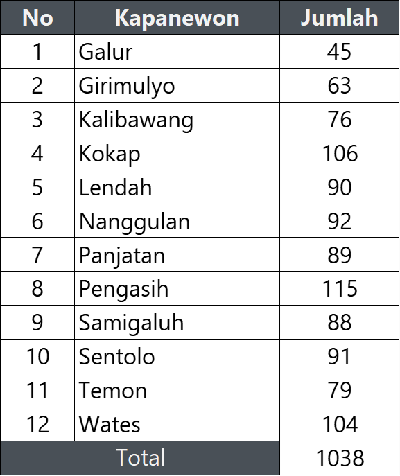
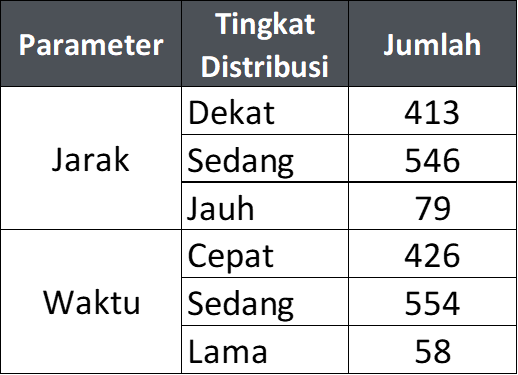

Indonesia hingga saat ini masih menghadapi tantangan besar di bidang gizi, meliputi gizi kurang (stunting dan wasting), gizi lebih, serta kekurangan zat gizi mikro. Prevalensi stunting di Indonesia tercatat sebesar 19,8%, wasting sebesar 7,45%, serta meningkatnya obesitas pada anak dan dewasa. Berdasarkan laporan Global Hunger Index (GHI) tahun 2024, Indonesia menempati peringkat ke-77 dari 127 negara dengan nilai indeks kelaparan sebesar 16,90. Sebagai respons terhadap permasalahan tersebut, pemerintah meluncurkan Program Makan Bergizi Gratis (MBG). Program MBG merupakan salah satu program strategis nasional yang bertujuan untuk meningkatkan status gizi masyarakat, khususnya pada kelompok usia sekolah.
Program MBG resmi dimulai pada 6 Januari 2025 dan dilaksanakan secara bertahap di seluruh Indonesia. Sasaran utama dari program MBG adalah pelajar sekolah dari jenjang PAUD, TK, SD, SMP, hingga SMA/sederajat. Selain pelajar, program ini juga menyasar kelompok rentan lainnya, seperti ibu hamil, ibu menyusui, dan balita. Secara keseluruhan, total penerima manfaat MBG sekitar 82,9 juta jiwa yang tersebar di 38 provinsi. Keberhasilan pelaksanaan Program MBG sangat dipengaruhi oleh efektivitas sistem distribusi makanan dari Satuan Pelayanan Pemenuhan Gizi (SPPG) sebagai dapur penyedia makanan. Persebaran SPPG dan jaringan distribusinya menjadi aspek penting dalam memastikan pemerataan akses terhadap makanan bergizi di setiap wilayah.
Kabupaten Kulon Progo memiliki karakteristik geografis dan sosial ekonomi yang beragam, meliputi wilayah pantai, dataran rendah, hingga perbukitan, serta variasi kepadatan penduduk dan tingkat kesejahteraan antarwilayah. Keragaman tersebut memengaruhi aksesibilitas jaringan jalan dan waktu tempuh, sehingga diperlukan perencanaan distribusi MBG yang matang dan berbasis data spasial. Pemanfaatan Sistem Informasi Geografis (SIG) memungkinkan dilakukannya analisis perencanaan distribusi MBG berbasis spasial, seperti pemetaan jaringan distribusi MBG ke sekolah sasaran. Analisis ini digunakan untuk menilai tingkat keterjangkauan distribusi berdasarkan parameter jarak dan waktu tempuh. Pemetaan tersebut diharapkan dapat mendukung perencanaan distribusi MBG yang lebih optimal, efisien, tepat sasaran, dan transparan di Kabupaten Kulon Progo.
Tabel Jumlah SPPG
di setiap Kecamatan
Tabel Jumlah Sekolah
di setiap Kecamatan

Tabel Tingkat Keterjangkauan
Distribusi MBG

Disclaimer: Data yang disajikan merupakan data tanggal 2 Mei 2026. Apabila terdapat perubahan setelah tanggal tersebut, maka informasi yang ditampilkan mungkin tidak lagi sesuai dengan kondisi terkini.
Peta ini menyajikan informasi mengenai persebaran lokasi Satuan Pelayanan Pemenuhan Gizi (SPPG), lokasi sekolah penerima manfaat Program Makan Bergizi Gratis (MBG), serta distribusi SPPG terhadap sekolah sasaran
Peta ini menyajikan informasi mengenai tingkat keterjangkauan distribusi MBG terhadap sekolah berdasarkan parameter jarak tempuh dan waktu tempuh